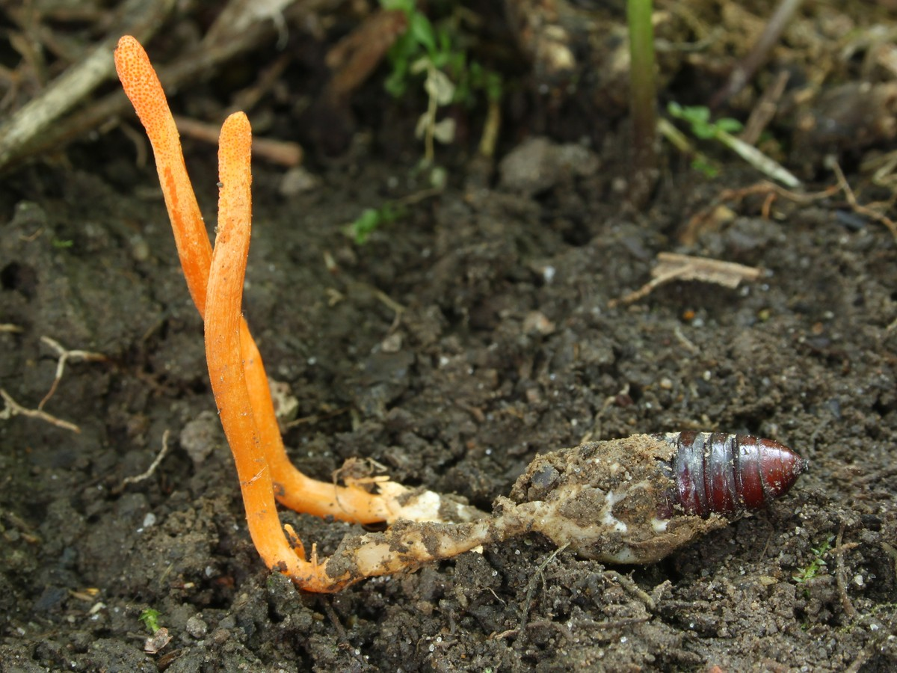
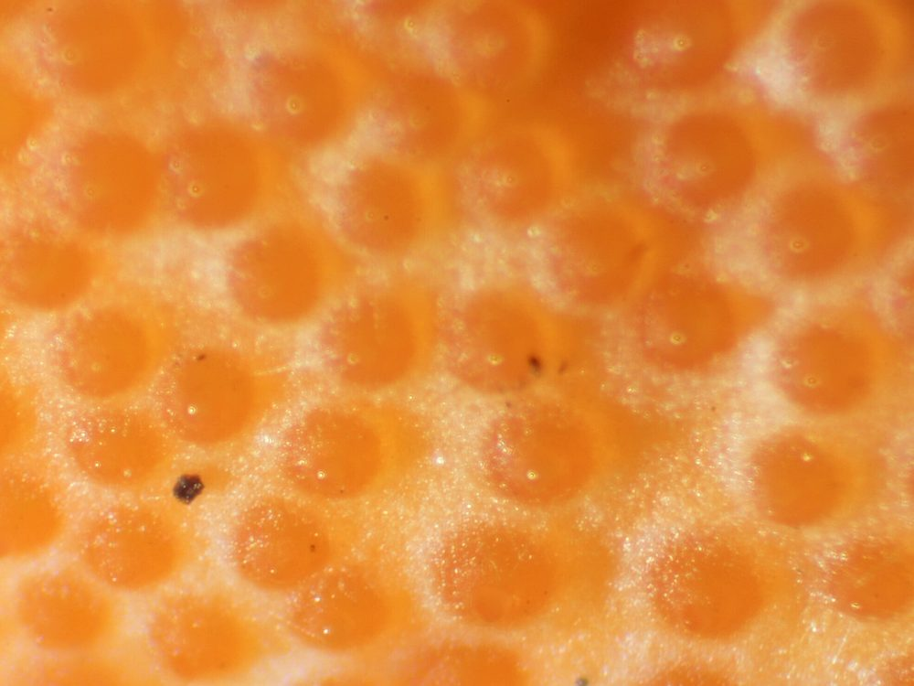
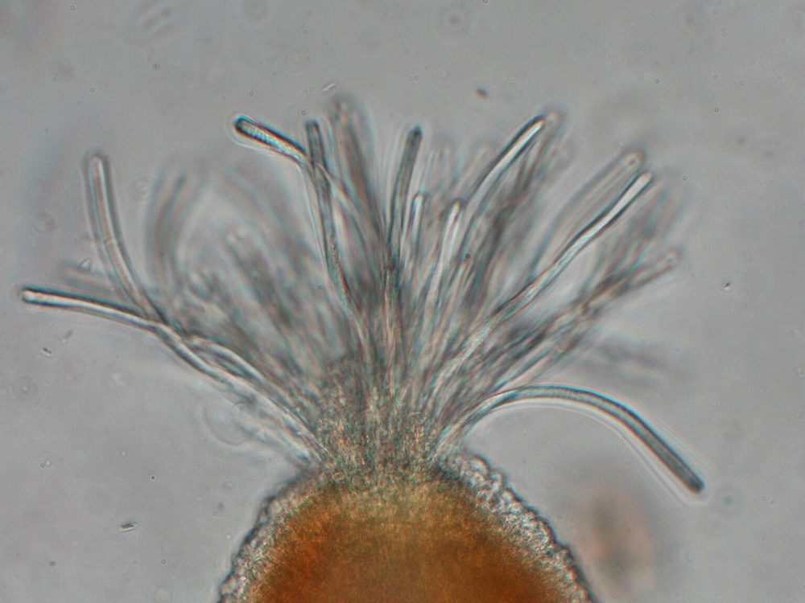

Actividad 1 · Ruta de 8 preguntas
El ciclo de vida y la reproducción
Modelo: Cordyceps militaris, familia Cordycipitaceae. Responde una pregunta a la vez, elige una opción y justifica tu elección. Cada respuesta se comprueba al instante y, al terminar la última pregunta, la actividad se cierra con tu puntaje y un resumen descargable.
Cargando pregunta…
Actividad 2 · Rutas reproductivas
Dos rutas reproductivas del hongo
Modelo: Cordyceps militaris, familia Cordycipitaceae. El hongo no elige de forma consciente entre reproducción sexual y asexual: ambas rutas forman parte de su ciclo y pueden ocurrir en ambientes estables o cambiantes. La sexual no es siempre la mejor opción y la asexual no es exclusiva de ambientes estables. La dispersión es un proceso aparte. Analiza cada escenario, registra una ruta y explica sus ventajas y costos.
Cargando escenario…
Actividad 3 · Observación guiada
¿Por qué existe cada estructura?
Modelo: Cordyceps militaris, familia Cordycipitaceae. Observa la fotografía y la ampliación, selecciona una estructura, identifica su función y relaciónala con la fase del ciclo. Debes completar las tres estructuras. No se colectan especímenes: se usan una fotografía, esquemas y placas preparadas.
Material demostrativo
Toca los númerosSelecciona un número sobre la fotografía o una tarjeta de la derecha. El punto elegido se resalta.

Material demostrativo y conservación: para observar estas estructuras no hace falta colectar hongos. Se pueden usar fotografías, esquemas y placas preparadas. Colectar muchas muestras puede afectar la estabilidad de las poblaciones naturales de C. militaris.
Ficha de observación
0 de 3 completadasElige una estructura para comenzar. Cada ficha tiene dos elecciones: la función y la fase del ciclo. Apóyate en la fotografía y en la ampliación.
1. ¿Qué función cumple?
2. ¿Con qué proceso se relaciona?
Ampliación: del estroma a la ascospora
La secuencia va de lo que se ve a simple vista hasta lo que solo aparece al microscopio. Los esquemas explican la ruta; las fotografías muestran cómo se ven realmente los peritecios y las ascosporas.
Las mismas estructuras, en fotografías reales
Macro y microscopio
Cada punto hundido es un ostiolo: la abertura de un peritecio. Los peritecios están incrustados en el estroma, como frascos diminutos bajo la superficie.
Foto: Martin Livezey (iNaturalist) · CC BY 4.0
Al microscopio se ven como hilos largos y tabicados. Salen en manojos por el ostiolo y después se fragmentan en partes más cortas (part-esporas).
Foto: Martin Livezey (iNaturalist) · CC BY 4.0Relación: estroma → peritecios → ascos → ascosporas. Los esquemas son didácticos y no están a escala; las fotografías son reales y muestran las mismas estructuras. En una placa preparada se pueden observar los ascos y las ascosporas sin colectar nuevos especímenes.
Actividad 4 · Consulta
Glosario científico y fuentes
Glosario del modelo Cordyceps militaris (familia Cordycipitaceae). Treinta y seis términos para leer, comparar y usar en tus justificaciones. Busca una palabra o filtra por categoría.
Marco científico
Ideas fuerzaMito vs. realidad
Pensamiento críticoFuentes y lecturas recomendadas
EvidenciaLas referencias se incluyen para el docente y para quienes quieran profundizar. Las actividades son una síntesis educativa: no sustituyen la lectura de los artículos originales.